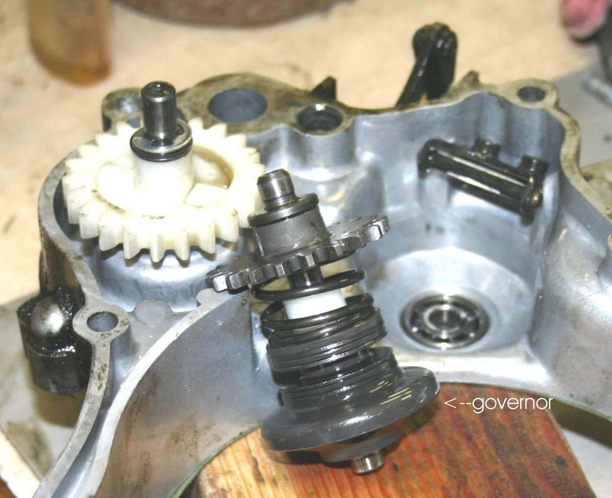
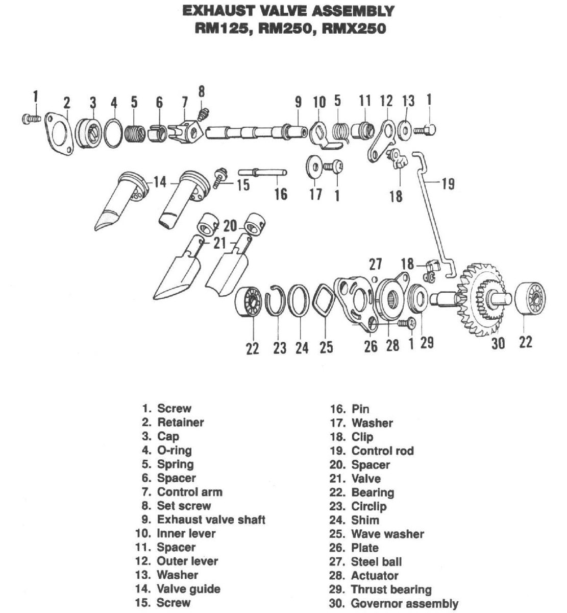

A power valve is a moving piece of metal in the exhaust port of a two-stroke engine. It closes part of the port at low revs and opens it at high revs. A big port gives big power but a narrow power band. A smaller port at low revs keeps more mixture in the cylinder and widens the power band.
What it does
Centrifugal weights (a governor) overcome a spring and move the linkage. The linkage is usually spring loaded so the valve is closed at low revs and when the engine is off. Each maker uses a different linkage, governor and way of setting it, so check the shop manual.
Signs it is worn or failing
- Weak power at one end of the rev range: Two-stroke is weak at one end of the rev range.
- Valve or linkage stiff or stuck with carbon.
- Loose or damaged linkage, broken spring.
When to replace it
Parts are replaced as a worn or damaged set by a workshop. Regular carbon cleaning matters more than replacement. Use the interval in your bike's manual. See Assess and service a two-stroke power valve.
What to match when buying
- Valve, linkage and governor parts for your make, model and year.
- O-rings, seals and cover gaskets.
- If the cylinder is bored oversize, check that the valve clears the piston.